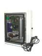

........Literatura>>>Desinfección de agua embotellada por ozono
 |
La producción de agua envasada que es segura y agradable es un reto que requiere de procesos comprobados de tratamiento para sostener una excelente calidad. El ozono es una solución a este reto en muchas marcas mundiales de gran prestigio. Su capacidad de desinfectar agresivamente sin dejar residuos químicos que puedan afectar el sabor es su gran virtud. Los mejores procesos de desinfección incorporan varias estrategias contra el posible paso de patógenos, incluyendo: filtración de 1 micra absoluta, irradiación por luz ultravioleta, ozonación e iones de plata. |
Cada una de estas barreras debe ser diseñada y operada correctamente para lograr la calidad que exige el consumidor.
El papel del ozono en la desinfección del agua
En Europa, el ozono se ha utilizado continuamente desde principios del siglo pasado para la desinfección de agua municipal. El ozono se genera a partir de aire u oxígeno al aplicar una descarga de alto voltaje para convertir parte del oxígeno (O2) a ozono (O3). El gas ozonizado se mezcla con el agua para disolver el ozono en el agua. Esta mezcla se logra usualmente burbujeando el gas a través de un difusor poroso en el fondo de un tanque, o por medio de un eyector en línea que produce una zona de alta turbulencia.
La Agencia de Protección del Medio Ambiente (EPA) en EE.UU. ha señalado un factor “CT” de Concentración (mg/L) x Tiempo (minutos) de 0.72 a 20 ºC para desactivar 99.9% de los quistes de Giardia lamblia (parásitos transmitidos por el agua, muy difíciles de matar) y más de 99.9% de los virus entérico. Esto significa que se necesitaría, por ejemplo, 0.24 mg/L (miligramos por litro) de ozono residual disuelto, sostenido durante tres minutos. Los europeos utilizan como regla para la desinfección de agua potable, 0.4 mg/L sostenido por cuatro minutos, lo cual equivale un CT de 1.6.
La cantidad de ozono requerido para alcanzar estos valores de CT y asegurar una desinfección efectiva dependerá de la temperatura del agua, el pH, la demanda inicial de ozono (cantidad que hay que dosificar antes de empezar a generar un residual) y el sistema de contacto ozono-agua. Por lo regular, esta cantidad suele ser entre 1 y 2 mg/L de dosificación de ozono al agua.
CT requerido para desinfectar con ozono con respecto a la temperatura:
Temperatura,°C |
CT |
< 1 |
2.90 |
5 |
1.90 |
10 |
1.40 |
15 |
0.95 |
20 |
0.72 |
>25 |
0.48 |
Asegúrese al adquirir un ozonificador que pueda producir ozono a una concentración de al menos 1% por peso en aire u oxígeno y que la producción de ozono sea mostrada en su planta. Tenga en mente que la altura sobre nivel de mar y la temperatura ambiente pueden afectar tanto la producción de ozono como la transferencia de ozono al agua.
La manera incorrecta de aplicar ozono
Desafortunadamente, existen muchas instalaciones de ozono mal diseñadas e incapaces de alcanzar estos niveles de CT. Es muy común ver, por ejemplo, sistemas de contacto en un tanque con difusores en el fondo, donde el agua entra por arriba controlada por un interruptor de nivel y es aspirada del fondo por una bomba que envía el agua ozonizada a la llenadora.
Un sistema de este tipo presenta las siguientes carencias:
1. Falta altura para la transferencia eficiente de ozono. Para disolver ozono en agua mediante difusores, debe existir una altura efectiva de ascensión de burbujas de 6 metros (m), o el tanque debe ser presurizado. A menudo estos tanques tienen menos de 4m de altura y operan a presión atmosférica.
2. En la parte superior del tanque se está satisfaciendo la demanda inicial de ozono y por lo tanto no hay ozono disuelto. El tiempo de residencia en esta zona del tanque, que puede fácilmente abarcar la mitad del volumen del tanque, no contribuye al desarrollo de CT.
3. Su diseño favorece la probabilidad de cortos circuitos hidráulicos donde parte del agua pasa de la entrada a la salida en un tiempo mucho menor que el tiempo teórico de residencia. Por estas carencias el CT obtenido es bastante inferior a lo requerido y los resultados no son óptimos con este arreglo.
Sistema doble tanque con difusores
Un muy buen método de aplicar el ozono es el clásico sistema europeo de doble tanque con difusores. Los tanques tienen 6m de altura y trabajan en serie. En el primer tanque se satisface la demanda de ozono y se genera un residual de ozono disuelto; el tiempo de residencia será de un minuto y se inyectará 90% del ozono en este tanque. El segundo tanque asegura un CT adecuado con cuatro minutos de residencia y una pequeña adición de ozono para mantener un residual de 0.4 mg/L. Los inconvenientes de este método son la altura, el costo y la necesidad de rebombeo posterior.
Ventajas del uso de eyectores venturi
A diferencia del método de difusor, el venturi puede generar un vacío en la garganta del eyector y succionar así el ozono. Esto reduce la posibilidad de fugas de ozono que es irritante para los pulmones y posibilita el uso de generadores de ozono que trabajan a vacío sin necesidad de un compresor de alimentación de aire.
Figura 1. Valvulas Venturi de 3/4 y 1 pulgadas.
Otra ventaja del venturi es que permite inyectar ozono en el agua bajo presión sin necesidad de rebombear el agua después de disolver el ozono. La disolución con venturi se logra en línea y se utiliza un tanque más bien para darle tiempo de reacción al ozono; en este caso nos importa más el volumen que la altura.
Desventajas del venturi
Una de las principales desventajas del eyector es que genera una caída de presión en la línea, lo cuál implica energía adicional para el bombeo. Esta caída de presión llega a ser entre 0.5 y 2.5 kilogramos por centímetro cuadrado (kg/ cm2), e incluso mayor cuando se requiere vacío para succionar o cuando mayor presión hay en la línea.
También un venturi requiere flujo constante para crear la turbulencia que fomenta la disolución del ozono. Cuando el flujo de agua tratada es intermitente o muy variable, hay que diseñar el sistema para permitir la continuidad de flujo en el venturi. Para evitar la aglomeración de burbujas y pérdida de superficie de transferencia, es preferible utilizar tubería vertical después del eyector venturi. Es una buena idea instalar una mirilla en la línea para observar el tamaño y la distribución de las burbujas.
Un tramo corto de tubería horizontal justo antes de entrar al tanque de contacto puede ser inevitable y no afectará seriamente a las burbujas.
Sistema venturi con pleno flujo
Una manera sencilla de inyectar ozono es hacer pasar el flujo completo de agua a través de uno o más eyectores, seguido por un tramo de tubería vertical con flujo hacia abajo que sirve para disolver el ozono, y luego un tanque presurizado que asegurará suficiente tiempo de reacción. Un retorno de agua que abre cuando se eleva la presión para regresar agua de la salida del tanque al punto de bombeo, mantiene el flujo en el venturi cuando disminuye el consumo. Con este arreglo todo el volumen del tanque sirve para generar CT porque se satisface la demanda inicial de ozono en el tramo de tubería anterior y el agua entra al tanque ya con ozono residual, permitiendo usar un tanque más chico y requiriendo menos ozono para lograr el CT deseado.
Sistema venturi con bomba booster
Cuando hay que incorporar el ozono a un proceso existente donde la bomba de alimentación al sistema no cuenta con potencia suficiente para vencer la caída de presión en el venturi, se puede diseñar un sistemade contacto autosuficiente en cuanto a bombeo. También permite concentraciones de ozono residual más altas porque el agua puede pasar varias veces por el venturi si es necesario, adicionando en cada paso más ozono. Debido a que la bomba booster vence la caída de presión en el venturi y que la presión en el tanque es la misma de la llegada al venturi, este sistema de contacto se integra al proceso existente sin afectar el perfil de presiones. En este sistema es importante usar una bomba totalmente resistente al efecto oxidante del ozono, especialmente en el sello mecánico de la flecha.
Con demasiada frecuencia el ozono no realiza todo su potencial de desinfección por desconocimiento de los principios de diseño del sistema de contacto. Como parte del régimen de tratamiento en su sistema, puede proporcionar desinfección y oxidación efectiva de una gran variedad de contaminantes. De cualquier manera, no debe darse por alto la consideración del pretratamiento apropiado, particularmente si la fuente de agua contiene el contaminante bromuro. Con el debido cuidado, las bondades del ozono pueden ayudarnos a producir agua envasada de la cual ciertamente podremos estar orgullosos. Contáctenos para recomendarle el diseño y los equipos que satisfagan sus necesidades…
Bibliografía
- Desinfección efectiva de agua embotellada con Ozono. Albicker, Carlos., Volumen 1 - Número 1, 1 de Mayo de 2001, Paginas 22-25
Podemos enviar cualquier equipo a cualquier parte del mundo, por el medio que usted elija: DHL, Estafeta, Fedex, Multipack, UPS, vía marítima, vía terrestre en flete por cobrar o pre-pagado.
Si no encuentra listado en nuestro sitio web el producto que busca puede contactarnos vía telefónica o correo electrónico, un ingeniero de ventas será asignado para responder con prontitud a su solicitud. |